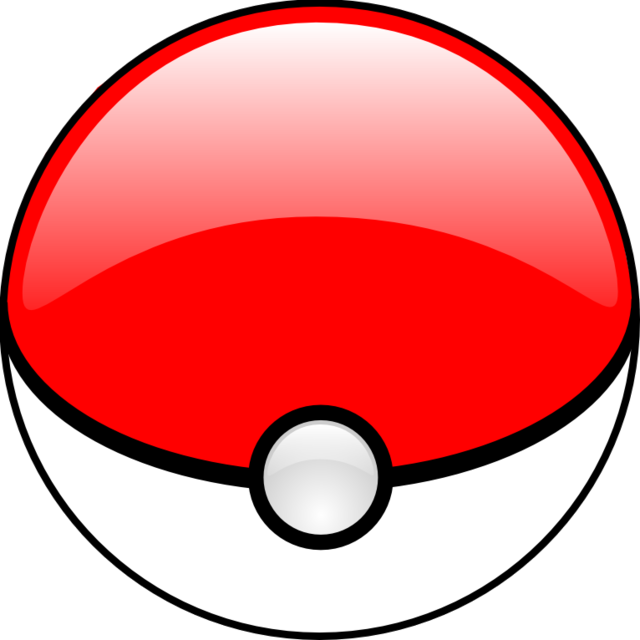

<mat-card class=" mat-dialog-container" >
    <mat-card-header>
      
      <mat-card-title>{{PokeNombre}}</mat-card-title>
      <mat-card-subtitle>No° {{PokeNo}}</mat-card-subtitle>
    </mat-card-header>

    
    <mat-card-content>
      
      <mat-chip-list aria-label="Fish selection">
        <!-- <mat-chip>One fish</mat-chip>
        <mat-chip>Two fish</mat-chip> -->      
        <!-- <mat-chip color="accent" selected>Accent fish</mat-chip> -->

        <mat-chip color="warn" selected>Tipo: {{PokeTipo}}</mat-chip>
        <mat-chip color="warn" selected>Movimiento: {{PokeMove}}</mat-chip>
        <mat-chip color="primary" selected>Altura: {{PokeA}} </mat-chip>
        <mat-chip color="primary" selected>Peso: {{PokeP}}  </mat-chip>
      </mat-chip-list>

    </mat-card-content>

  </mat-card>

  
